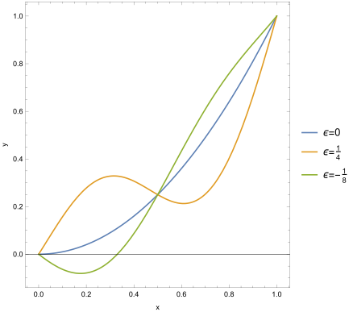

We argued, using our intuition about straight lines, that Newton’s first law is given by minimising the total kinetic energy, given as the action
Starting from the action, how do we get back to Newton’s first law?
Let’s imagine that our particle lives one-dimension, so its trajectory is given by , we have boundary conditions and . Then the action is equal to
where . We will write this in an abstract way
Note that in our case only depends explicitly on , but we will want to allow for the more general case later.
Definition. is a functional (a function of a function) of .
Now our problem is to minimise over all possible paths to find the one with the smallest kinetic energy. When we want to minimise a function, we know what to do, we find the derivative and set it equal to zero. This is exactly what we do with functionals. This kind of calculus of functionals is known as the calculus of variations.
Suppose we have a candidate path . We can make a small variation . Note that is a function of . Since the boundary conditions must be respected we require .
Example. Suppose our trajectory is , with , , and , then a modification could be , since , as shown in Figure 1.

Proposition. A trajectory between and will minimise if
| (1) |
for any satisfying the boundary conditions , .
How do we see this? Well, if we’re at the minimum then any change can only increase the value of . This must mean that is a critical point of , thought of a function of , as illustrated in Figure 2.
Now we need to calculate the change in as we change the value of . We can compute directly,
| (2) |
where . Now we can integrate the second term by parts, we write
This must be zero because . But we can also write it as
Now we can go back to the original expression (2), and using the above result we find
Where we have the following definition
Definition. The quantity
is the functional derivative of the functional , given by
Now, per our statement (1), this must be zero (at ) for every possible modification to our trajectory . This can only happen if the functional derivative vanishes.
Lemma. (Fundamental lemma of the calculus of variations) The quantity
| (3) |
is zero for all if and only if the functional derivative vanishes.
Proof. Suppose the functional derivative is not zero. Then there must be a time interval , with , where it is single-signed (we assume positive). Now we can choose to be anything we like, and we must still find that (3) vanishes. In particular we can choose to be a smooth “bump†function between and , as shown in Figure 3.
Then the integral
is zero outside the interval , so we can replace it with a new one
But on this interval both and the functional derivative are positive, by assumption, hence we must have
but this is a contradiction, so the functional derivative must vanish. □
By setting the functional derivative to zero we get an equation, known as the Euler-Lagrange equation. Any function minimising must satisfy the Euler-Lagrange equation, but in general solutions are not minima of , but instead critical points, known as extrema (in the same way the a critical point of a function can be a minimum, maximum or inflection point). Setting the functional derivative equal to zero is extremising, or finding a stationary point of, the functional.
Definition. The Euler-Lagrange equation for the functional is given by
If we solve this equation we should find out straight lines, and the ‘global’ version of Newton’s first law.
Our functional is
and the functional derivative is
and the Euler-Lagrange equation is Newton’s first law (force-free motion)